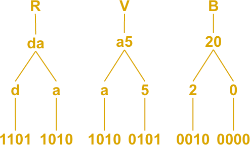
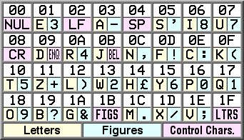
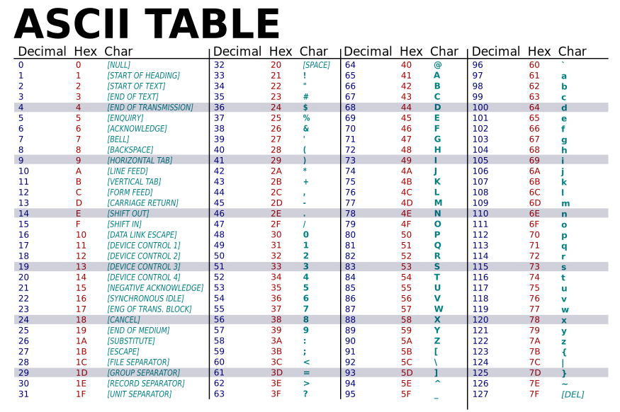
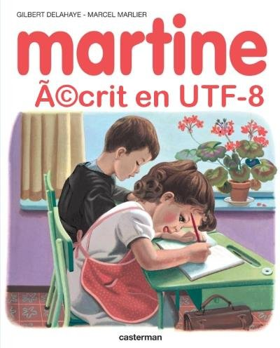

Les jeux de caractères codés
De l’origine des algorithmes
Le terme algorithme provient aussi bien du mathématicien Muḥammad ibn Mūsā al-Khwārizmī (780-850 env.) dont le nom a été latinisé en Algaurizin, Algorizmi ou encore Algoritmi, que du terme grec arithmos qui signifie nombre.
Au Moyen Âge, le terme augorisme désigne la science du calcul utilisant les chiffres arabes dans un système de numération de position. Plus tard, l’algorithme devient l’ensemble des opérations mises en œuvre dans un calcul. Et, en informatique, il traduit l’ordre d’exécution des séquences d’un programme dans l’obtention d’un résultat.
La numération de position
La numération de position en base décimale est utilisée au quotidien. Elle repose sur deux principes fondamentaux :
- l’utilisation de dix signes pour compter [0-9]
- la position des signes est porteuse de sens (7503 € ≠ 0375 €)
Le cerveau dispose naturellement d’un programme pour décoder les nombres :
\[ \begin{aligned} 7503 &= 7000 + 500 + 00 + 3 \\ 7503 &= 7 \times 1000 + 5 \times 100 + 0 \times 10 + 3 \times 1 \\ 7503 &= 7 \times 10^3 + 5 \times 10^2 + 0 \times 10^1 + 3 \times 10^0 \end{aligned} \]
En informatique, la numération de position se calcule en base binaire plutôt que décimale, ce qui implique l’utilisation de deux signes uniquement : 0 et 1. Considérant que depuis les années 70, l’unité de stockage est devenue le byte de 8 bits (octet), un octet permet de traduire 28 informations, soit 256.
Conversions entre différentes bases
Imaginons un nombre codé sur l’octet 01110010 en dehors de tout jeu de caractère. Si on le décompose, on obtient le nombre 144 dans la notation décimale :
\[ \begin{aligned} 114 &= 0 \times 2^7 + 1 \times 2^6 + 1 \times 2^5 + 1 \times 2^4 + 0 \times 2^3 + 0 \times 2^2 + 1 \times 2^1 + 0 \times 2^0 \\ 114 &= 0 \times 128 + 1 \times 64 + 1 \times 32 + 1 \times 16 + 0 \times 8 + 0 \times 4 + 1 \times 2 + 0 \times 1 \\ 114 &= 0 + 64 + 32 + 16 + 0 + 0 + 1 + 0 \end{aligned} \]
La conversion d’un nombre décimal vers sa représentation en binaire se résoud grâce à la division euclidienne :
\[ \begin{aligned} 114 &= 0 \times 2^7 + 114 \\ 114 &= 1 \times 2^6 + 50 \\ 50 &= 1 \times 2^5 + 18 \\ 18 &= 1 \times 2^4 + 2 \\ 2 &= 0 \times 2^3 + 2 \\ 2 &= 0 \times 2^2 + 2 \\ 0 &= 1 \times 2^1 + 0 \\ 0 &= 0 \times 2^0 + 0 \end{aligned} \]
Par extension, la conversion en binaire d’un nombre supérieur à 128 nécessiterait plus d’un octet. Pour connaître le nombre d’octets, il suffit d’arrondir à l’entier supérieur le résultat de la division du nombre à représenter par 128 :
\[ x = \lceil 244 \div 128 \rceil \]
La conversion du binaire en hexadécimal se révèle quant à elle extrêmement économique pour l’informatique en terme de stockage. En effet, 28 est égal à 162. La notation hexadécimale ayant besoin de 16 signes, on utilise alors au-delà du chiffre 9 les caractères latins de A à F.
Le mécanisme de conversion implique les étapes suivantes :
- découper l’octet en deux parties égales ;
- convertir les deux parties en base décimale ;
- remplacer par la correspondance hexadécimale pour les résultats au-dessus de 9.
Considérons l’octet 11110100 :
Conversion de la partie 1111 :
\[ \begin{aligned} &= 1 \times 2^3 + 1 \times 2^2 + 1 \times 2^1 + 1 \times 2^0 \\ &= 8 + 4 + 2 + 1 \\ &= 15 \end{aligned} \]
Conversion de la partie 0100 :
\[ \begin{aligned} &= 0 \times 2^3 + 1 \times 2^2 + 0 \times 2^1 + 0 \times 2^0 \\ &= 0 + 4 + 0 + 0 \\ &= 4 \end{aligned} \]
L’octet 11110100 vaut par conséquent F4 en hexadécimal.
Le codage des couleurs
Une teinte est le résultat d’un mélange de différentes proportions des trois couleurs primaires : le rouge, le vert et le bleu. Ce système est appelé RVB (RGB en anglais).
Chacune de ces couleurs étant codée sur un octet, une teinte est représentée par trois octets ou trois bytes de 8 bits, soit 24 bits au total, ce qui laisse un choix entre 16 777 216 combinaisons (224).
Par exemple, la couleur aquamarine est codée en binaire : 01111111 11111111 11010100. La répartition s’effectue ainsi :
- Rouge :
01111111 - Vert :
11111111 - Bleu :
11010100
Après conversion en hexadécimal, on obtient le code 7F FF D4.
Et pour effectuer la conversion de l’hexadécimal vers le binaire ? Prenons la couleur goldenrod, notée DA A5 20 :

Un charset ?
Charset : Character set, association d’un caractère abstrait avec une représentation numérique (décimale, octale, hexadécimale…)
Un character set, ou jeu de caractères, est indispensable à l’échange d’informations sur Internet. Le Morse, l’ASCII ou l’UTF-8 sont des exemples de jeux de caractères. Chaque système (serveur, BDD, système de fichiers…) doit savoir dans quel format sont échangées les informations.
Principes de l’encodage de caractères
Le décodage naturel des caractères
Le cerveau décode plus ou moins bien les caractères :
小さな猫は牛乳を飲んでいます。Mały kot pije mleko.Des traits forment des glyphes auxquels sont associés des caractères. Un processus de décodage par blocs est ensuite mobilisé pour obtenir des mots et des phrases, comme dans l’exemple :
Lepetitchatboitdulait.Segmentation + décodage (français) = « Le petit chat boit du lait. »
Code Baudot
1832 : code Morse
Dans le code Morse, un caractère est associé à un signal (lumière, son, geste), mais s’il existe une table de décodage universelle, le langage est quant à lui souvent chiffré.
Code Morse :
.-.. .- / .--. .... .- .-.. .- -. --. . / .- / .-. . .--. .-.. .. ..-.. / ... .- / - --- .. .-.. . .-.-.-Décodage :
La phalange a retiré sa toile.Quel serait le sens de la phrase décodée ?
1874 : code Baudot

Le code Baudot est codé sur 5 bits, ce qui lui permet de représenter 32 caractères (\(2^5\)). Il se décline en plus en deux jeux distincts entre lesquels on peut basculer grâce aux caractères spéciaux LTRS et FIGS, ce qui double ses capacités de traitement pour parvenir à coder en tout 58 caractères différents. Certains sont effectivement communs aux deux jeux.
Exemple : On boit le thé à 16 heures.
Encodage Baudot :
18 0C 04 19 18 06 10 04 12 01 04 10 14 01 04 03 04 1B 17 15 04 1F 14 01 07 0A 01 05 1B 1CTranscription :
O N SP B O I T SP L E SP T H E SP A SP FIGS 1 6 SP LTRS H E U R E S FIGS .Si le code Baudot permet de coder rapidement des messages courts, il reste défectif sur certains points (minuscules, diacritiques, alphabets autres que latin…). Ses performances sont toutefois intéressantes au vu de la légèreté du message codé : 150 bits sur nécessaires ici pour encoder la phrase (\(30 \times 5 = 150\)).
Vers l’uniformisation
ASCII
L’apparition d’une norme pour échange de l’information
Dans les années 1960 apparaît une norme d’encodage de caractères, l’ASCII pour American Standard Code for Information Interchange. Elle contient 128 caractères dont 95 imprimables :
- 62 caractères alphanumériques (A-Z, a-z, 0-9)
- 33 signes de ponctuation
- 33 caractères de contrôle (saut de ligne, tabulation, commandes…)
Dans la norme ASCII, les caractères sont codés en binaire de 0000000 à 1111111, de telle manière que, pour l’ensemble des informations elle ne sollicite que 7 bits. Depuis 1970 environ, les ordinateurs travaillent toutefois sur un byte de 8 bits, appelé octet. Le 8e bit est alors fixé à 0 :
| Lettre | Décimal | Binaire |
|---|---|---|
| C | 67 | 01000011 |
| a | 97 | 01100001 |
| t | 116 | 01110100 |
« Le petit chat boit du lait. » en ASCII :
01001100 01100101 00100000 01110000 01100101 01110100 01101001 01110100 00100000 01100011 01101000 01100001 01110100 00100000 01100010 01101111 01101001 01110100 00100000 01100100 01110101 00100000 01101100 01100001 01101001 01110100 00101110
Pour calculer le nombre de bits nécessaires au codage d’une information, on comptabilise le nombre de divisions euclidiennes nécessaires pour obtenir un quotient nul.
Par exemple, pour 128 caractères, sachant que le 1er est positionné au numéro 0 :
\[ \begin{aligned} 127 &= 2 \times 63 + 2 \\ 63 &= 2 \times 31 + 1 \\ 31 &= 2 \times 15 + 1 \\ 15 &= 2 \times 7 + 1 \\ 7 &= 2 \times 3 + 1 \\ 3 &= 2 \times 1 + 1 \\ 1 &= 2 \times 0 + 1 \end{aligned} \]
Une volonté d’améliorer la communication
L’avantage principal que revendique l’ASCII est une économie de stockage, car un caractère ne nécessite toujours qu’un seul octet pour être représenté. D’un autre côté, son impossibilité à encoder des caractères non latins a vu la prolifération de systèmes ad hoc.
L’ASCII a par conséquent profité du 8e bit libre afin de s’étendre à 256 caractères (\(2^8\)), une évolution qui n’a pas suffi pour endiguer la multiplication des jeux de caractères spécifiques :
- développement de l’ISO-8859-1 ou Latin1 pour les langues européennes, puis de l’ISO-8859-15 (Latin9) qui introduit le symbole € ;
- les langues asiatiques évoluent de leur côté ;
- les documents deviennent illisibles à l’international dès lors que l’on change les systèmes.
Unicode
En 1991 paraît la première publication du consortium Unicode dont l’objectif est de fournir à l’ensemble des caractères de toutes les langues connues (110 000 env.) un nom ainsi qu’un identifiant numérique, et ce peu importe le système d’écriture (alphabétique, syllabique, logographique…)
Chaque caractère dispose ainsi d’un point de code :
- préfixé
U+ - base hexadécimale sur 4 à 6 caractères selon le plan
Les points de code sont ensuite encodés selon un format (UTF-8, UTF-16…). En ce qui concerne son encodage UTF-8, Unicode est compatible avec l’ASCII : ses 128 caractères sont en effet représentés par les mêmes octets aux points de code U+0000 à U+007F.
| Caractère | Nom | Point de code | Représentation binaire UTF-8 |
|---|---|---|---|
| a | Lettre minuscule latine a | U+0061 | 01100001 |
| ἐ | Lettre minuscule grecque epsilon esprit doux | U+1F10 | 11100001 10111100 10010000 |
| ㆞ | Marque d’annotation idéographique de la terre | U+319E | 11100011 10000110 10011110 |
| ܬ | Lettre syriaque taw | U+072C | 11011100 10101100 |
UTF-8
En 1992 paraît l’UTF-8 (Universal character set Transformation Format 8 bits), inventé par Kenneth Thompson. Il s’agit d’un système de codage sur 4 octets maximum, rétrocompatible avec les anciens systèmes basés sur 1 octet.

Potentiellement, l’UTF-8 peut représenter \(2^{32}\) (> 4 milliards) caractères soit l’ensemble de tous les systèmes d’écriture actuels. Il est proposé en 1996 au consortium Unicode et devient universel deux ans après.
Fonctionnement :
Si le 8e bit vaut 0, on est en présence d’un caractère ASCII qui n’occupe comme espace de stockage qu’un byte de 8 bits, soit un octet. Si en revanche les 7e et 8e bits d’un octet valents tous les deux 1, alors il s’agit du premier octet d’un caractère représenté sur plusieurs. Les octets de la suite sont alors encodés avec les deux derniers bits fixés à 10.
Prenons la phrase suivante : « Mały kot pije mleko. » Son encodage UTF-8 vaut :
01001101 01100001 11000101 10000010 01111001 00100000 01101011 01101111 01110100 00100000 01110000 01101001 01101010 01100101 00100000 01101101 01101100 01100101 01101011 01101111 00101110 00001010Nous pouvons remarquer que le caractère ł est codé sur deux octets (11000101 10000010) quand tous les autres le sont sur un seul.
Comment l’informatique encode-t-elle l’information ?
En informatique, l’unité de base qui sert à l’échange d’informations est le bit. Or, le bit ne peut revêtir que deux formes primordiales,
0ou1. Utilisé isolément, un bit ne permettrait d’encoder que deux caractères. Par exemple, avec la table de conversion suivante :01On obtiendrait pour le texte « Le petit chat boit du lait. » :
Clairement, un bit ne suffit pas pour encoder tous les caractères du message. Qu’en serait-il avec deux bits ?
00011011Si deux bits ne suffisent pas non plus, comment savoir, pour un message, la quantité de bits nécessaire ?
Faisons l’inventaire du besoin :
Leptichabodul.= 15 caractères. Sachant que 1 bit ne peut représenter que 2 caractères (\(2^1\)) et 2 bits seulement 4 caractères (\(2^2\)), il nous faudrait 4 bits (\(2^4\) caractères) pour représenter les 15 caractères du message.